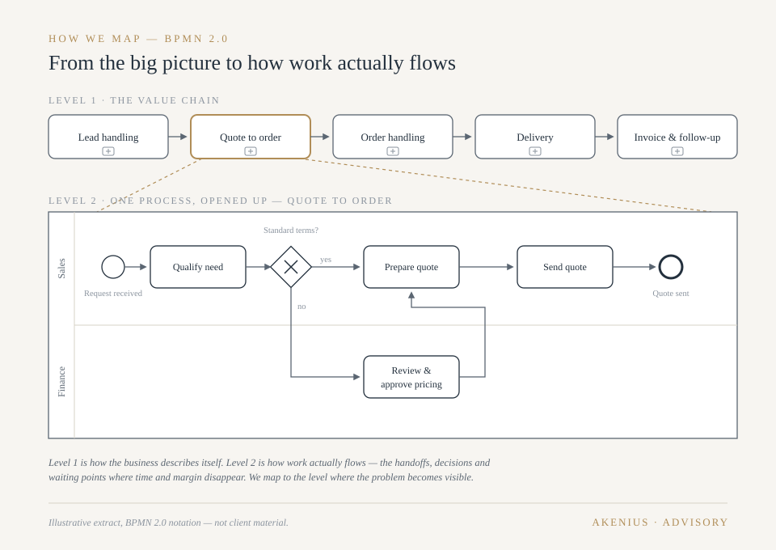
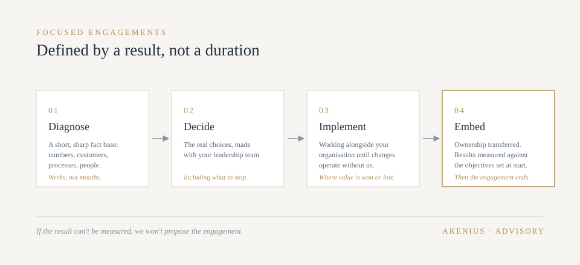

Growth rarely stalls for lack of ideas. It stalls because strategy, processes and commercial execution stop reinforcing each other.
We take on focused engagements where the result is measurable — led by someone who has owned the P&L, set the prices and carried the outcome. Advice from the operating side of the table.
Where we deliver value
Four services that reinforce each other
Growth stalls when strategy, processes and commercial execution stop pulling in the same direction. Each of these services strengthens the others.
Strategic planning and implementation
Research consistently shows that most strategies fail in execution, not design. The pattern is familiar: an ambitious plan, followed by too many initiatives, conflicting priorities, an unaligned leadership team and an organisation that quietly keeps doing what it did before.
We help you make the real choices — where to play, how to win, and just as importantly, what to stop doing. Then we stay for the harder half: translating those choices into priorities, ownership, resources and a decision rhythm the organisation can actually sustain. Strategy work with the discipline of someone who has had to live with the outcome.
Typical results: a strategy the leadership team can state in one page and defend in one meeting; fewer, funded initiatives; visible progress within a quarter.
Process and system mapping
Digital transformation built on unclear processes automates the confusion. Companies buy systems to fix problems that are really about how work flows, who decides, and where information gets stuck — and then wonder why the new platform changed nothing.
We map how the work actually flows — not the org chart version, the real version — before deciding what technology should carry it. That order matters: it makes system choices smaller, cheaper and more likely to stick, and it often reveals that part of the problem needs no technology at all.

Typical results: a fact-based process map the whole team recognises; a system requirement list cut to what matters; a transformation sequenced in steps the organisation can absorb.
Sales and marketing effectiveness
Most commercial organisations don't need more activity. They need the same energy pointed at fewer, better things: the right customers, the right channels, the right conversations — and marketing that pulls its weight in pipeline rather than in impressions.
We accelerate what already works and fix what doesn't. That means an honest read of pipeline quality, win rates, channel economics and the pricing conversations your sellers are actually having — followed by changes that show up in the order book, not in a slide deck.
Typical results: a sharper ideal-customer focus; pipeline discipline the sales team keeps because it helps them; marketing spend reweighted toward what demonstrably converts.
Pricing and profit optimization
Pricing is the fastest profit lever a company has, and the most neglected. In a typical business, a one percent improvement in realised price does more for operating profit than a one percent improvement in volume or variable cost — yet pricing is often the least managed number in the company, set years ago and eroded quietly through discounting.
We find the margin hiding in your price structure, discounting behaviour and product mix. This is the area where our background runs deepest — global pricing leadership across Nordic markets — and where results arrive fastest, because price changes need no new factory, no new system and no new headcount.
Typical results: a price architecture that matches value delivered; discounting brought under governance; mix steered toward margin. Often self-funding within months.
Why senior consultancy
Why companies choose it
One senior person, not a team of juniors
You get the experience you're paying for in the room and on the problem — not a partner who sells and a bench who delivers.
Operator judgement
Every recommendation is filtered through one question: would I have done this when I carried the number? That kills the elegant-but-unworkable ideas early.
Focused scope, honest endpoint
Engagements are defined by a measurable result, not a duration. When the result is delivered, the engagement ends — we don't grow roots.
Implementation included
The gap between deciding and doing is where value dies. We work through that gap with your team rather than leaving a report at the edge of it.
Sized to the company
Big-company discipline at small-company pace — the methods that work in a billion-krona business, stripped to what a 20- or 200-person company can carry.
Focused engagements
Defined by a result, not a duration
Every engagement is different; the discipline is the same. Four steps, and a measurable endpoint agreed at the start.

01
Diagnose
A short, sharp fact base: numbers, customers, processes, people. Weeks, not months.
02
Decide
The real choices, made with your leadership team — including what to stop.
03
Implement
Working alongside your organisation until the changes operate without us.
04
Embed
Ownership transferred, results measured against the objectives we set at the start.
Why Akenius
We advise on the things we have run
25+ years of Nordic commercial leadership: P&L ownership across Nordic markets, global pricing responsibility, sales and marketing leadership, and transformation experience from entity consolidation to market repositioning. We advise on the things we have run.
If the result can't be measured, we won't propose the engagement.